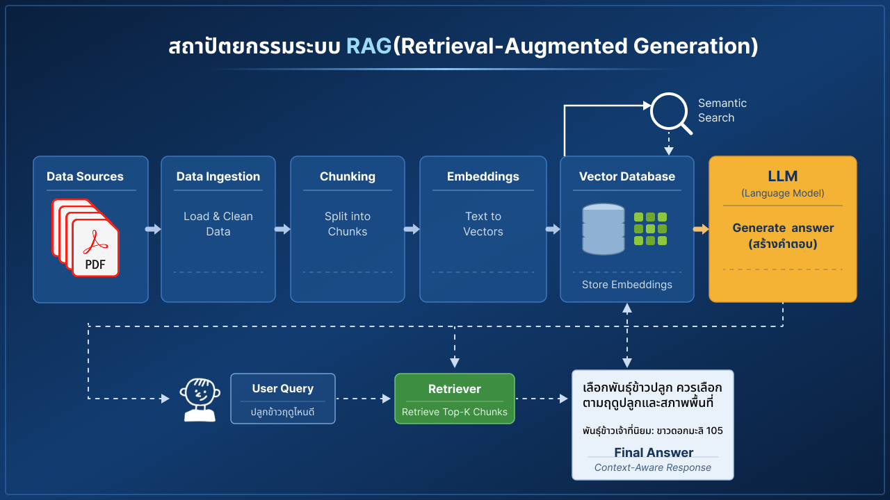
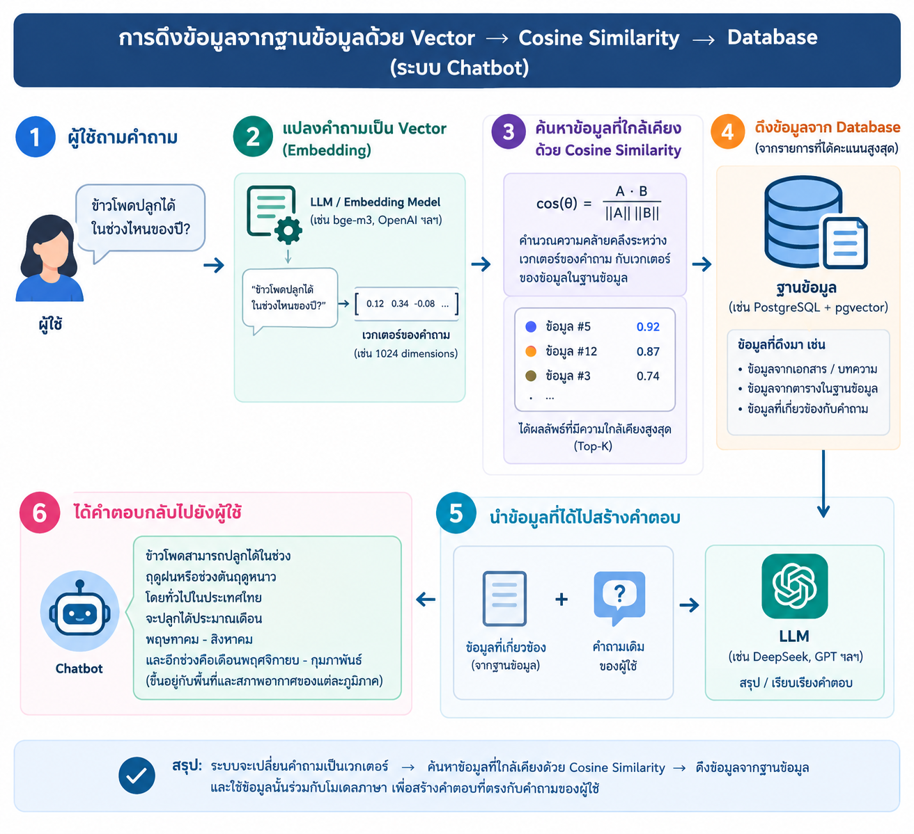

RAG Pipeline เจาะลึก: จากเอกสาร PDF สู่คำตอบที่มีแหล่งอ้างอิง
แบ่งเป็น 2 ขั้นตอน — "นำเข้าความรู้" ทำครั้งเดียวต่อเอกสาร และ "ค้นคืนคำตอบ" ทำทุกครั้งที่มีผู้ใช้ถามคำถาม

4.1ช่วงที่ 1 — นำเข้าความรู้ (Data Ingestion)
ไฟล์ PDF
คู่มือ ข้อมูลวิชาการ รายงาน เอกสารในหน่วยงาน
Typhoon OCR
แปลง PDF (ไทย/อังกฤษ) เป็นข้อความ รองรับเอกสารสแกน
Chunking
แบ่งข้อความเป็นส่วนย่อย1,500 ตัวอักษร / overlap 200
Embedding
แปลงแต่ละ Chunk เป็นเวกเตอร์ด้วย bge-m31024 มิติ
บันทึกฐานข้อมูล
เก็บเวกเตอร์ + ข้อความต้นฉบับ + แหล่งที่มาPostgreSQL + pgvector

4.2ช่วงที่ 2 — ค้นคืนคำตอบ (Retrieval ณ เวลาถาม)
เมื่อผู้ใช้ถามคำถาม ระบบจะแปลงคำถามเป็นเวกเตอร์ แล้วค้นหาข้อมูลที่ "ใกล้เคียงความหมาย" ที่สุดจากคลังความรู้ ก่อนส่งให้ LLM สร้างคำตอบ

🔧 พารามิเตอร์จริงที่ใช้ในระบบ
TOP_K = 10 ชิ้นข้อมูลต่อการค้นหนึ่งครั้ง · MIN_SCORE = 0.35 คะแนนความคล้ายขั้นต่ำที่ยอมรับ · วัดความคล้ายด้วย Cosine Similarity บน pgvector
4.3เลือก Vector Database จากการทดสอบ
ทดสอบบนข้อมูลจริง 24,811 chunks จาก 5 โดเมน เวกเตอร์ 1024 มิติ (bge-m3) เปรียบเทียบ 4 ตัวเลือก
| ฐานข้อมูล | Recall@10 | p50 (ms) | p95 (ms) | QPS | Index Time (s) | Disk (MB) |
|---|---|---|---|---|---|---|
| pgvector — HNSW (ที่เลือกใช้จริง) | 0.999 | 14.1 | 25.0 | 819 | 103.3 | 519 |
| pgvector — IVFFlat | 0.989 | 12.4 | 25.2 | 721 | 35.5 | 790 |
| Qdrant (gRPC) | 0.998 | 4.6 | 5.8 | 549 | 13.0 | 163 |
| ChromaDB | 0.996 | 69.4 | 78.7 | 97 | 28.9 | 108 |
✅ เหตุผลที่เลือก pgvector + HNSW
ให้ค่า Recall@10 และ QPS (จำนวนคำขอต่อวินาที) สูงสุดในกลุ่ม และใช้ Postgres ตัวเดียวกับที่ระบบมีอยู่แล้ว — ไม่ต้องเพิ่มบริการใหม่ให้ดูแล แม้ Qdrant จะตอบเร็วกว่าต่อคำขอ (latency ต่ำกว่า ~4 เท่า) แต่ต้องแลกกับความซับซ้อนในการดูแลระบบเพิ่ม
ℹ️ นี่เป็นเพียงหลักการพื้นฐาน
ระบบจริงของ OAE Chatbot ไม่ได้ค้นแบบตรงไปตรงมาเพียงขั้นตอนเดียว แต่เพิ่มเทคนิคอีก 4 ชั้นเพื่อยกระดับความแม่นยำ และป้องกันการตอบข้อมูลเท็จ — อธิบายแบบละเอียดในหัวข้อถัดไป